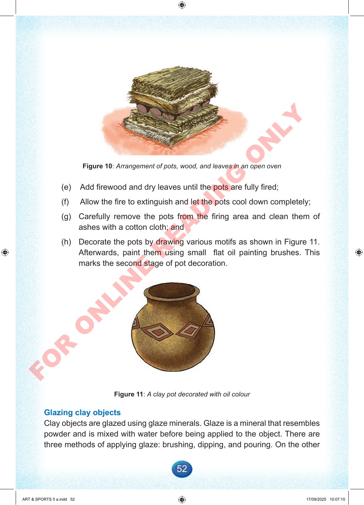

52
Figure
10:
Arrangement
of
pots,
wood,
and
leaves
in
an
open
oven
(e)
Add
firewood
and
dry
leaves
until
the
pots
are
fully
fired;
(f)
Allow
the
fire
to
extinguish
and
let
the
pots
cool
down
completely;
(g)
Carefully
remove
the
pots
from
the
firing
area
and
clean
them
of
ashes
with
a
cotton
cloth;
and
(h)
Decorate
the
pots
by
drawing
various
motifs
as
shown
in
Figure
11.
Afterwards,
paint
them
using
small
flat
oil
painting
brushes.
This
marks
the
second
stage
of
pot
decoration.
Figure
11:
A
clay
pot
decorated
with
oil
colour
Glazing
clay
objects
Clay
objects
are
glazed
using
glaze
minerals.
Glaze
is
a
mineral
that
resembles
powder
and
is
mixed
with
water
before
being
applied
to
the
object.
There
are
three
methods
of
applying
glaze:
brushing,
dipping,
and
pouring.
On
the
other
ART
&
SPORTS
5
a.indd
52
ART
&
SPORTS
5
a.indd
52
17/09/2025
10:07:10
17/09/2025
10:07:10
F
O
R
O
N
L
I
N
E
R
E
A
D
I
N
G
O
N
L
Y